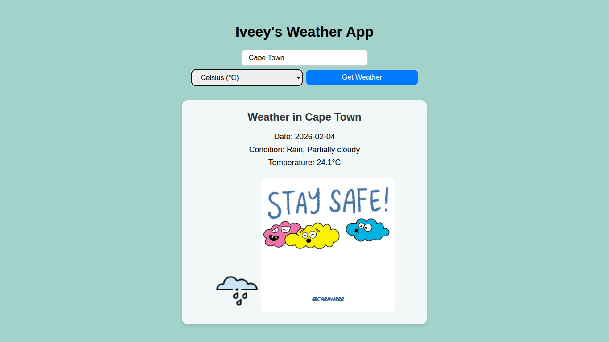
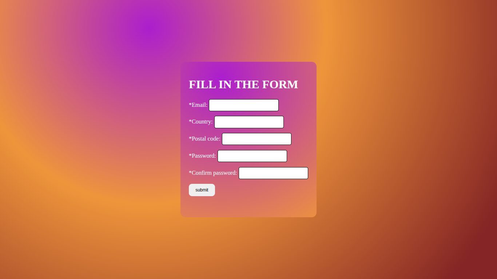

Projects
Weather App
Real-time weather app with dynamic visuals and DevOps-focused deployment.
ToDo App

Task manager frontend showcasing containerization and Kubernetes.
Portfolio Website

A minimal, responsive portfolio website built to feature projects.
Static Web App with Docker & CI/CD
Client-side form validation app deployed via Docker and Jenkins.
Scalable Node.js App on Azure
Infrastructure-as-Code deployment using Terraform on Azure.
More Projects Coming
Stay tuned…